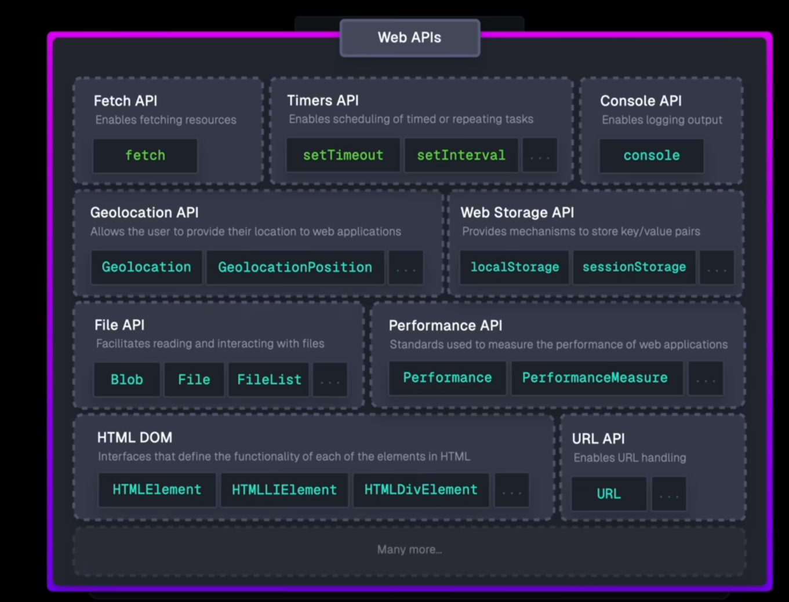

Memory, Concurrency, and the Event Loop
setTimeout and
user events.
Promise.then() / .catch() / .finally()Promise callbacks are the most fundamental source of Microtasks.
console.log('Start');
Promise.resolve().then(() => {
console.log('This is a Microtask');
});
console.log('End');Output:
Start End This is a Microtask
await
The "continuation" of a function after an await is queued
as a Microtask.
async function test() {
console.log('Start');
await Promise.resolve();
console.log('This is also a Microtask');
}
test();
console.log('End');Output:
Start End This is also a Microtask
queueMicrotask()An explicit method for scheduling a Microtask without creating a Promise.
console.log('1. Sync Code Start');
setTimeout(() => {
console.log('4. Macrotask (setTimeout)');
}, 0);
queueMicrotask(() => {
console.log('3. Microtask (queueMicrotask)');
});
console.log('2. Sync Code End');Output:
1. Sync Code Start 2. Sync Code End 3. Microtask (queueMicrotask) 4. Macrotask (setTimeout)
MutationObserver CallbacksThe callback for observing DOM changes runs as a Microtask.
<!-- Required HTML -->
<div id="observer-test"></div>
<script>
const targetNode = document.getElementById('observer-test');
const observer = new MutationObserver(() => {
console.log('DOM changed! (Microtask)');
});
observer.observe(targetNode, { childList: true });
targetNode.textContent = 'Hello'; // This change queues the microtask
</script>Output:
DOM changed! (Microtask)
process.nextTick() (in Node.js)(This code only works in a Node.js environment)
This task has an even higher priority than regular Microtasks in Node.js.
Promise.resolve().then(() => console.log('Microtask (Promise)'));
process.nextTick(() => console.log('Even higher priority! (nextTick)'));Output:
Even higher priority! (nextTick) Microtask (Promise)
setTimeout() / setInterval()The classic Macrotask. The callback is queued after the timer finishes.
console.log('Start');
setTimeout(() => {
console.log('This is a Macrotask');
}, 0);
console.log('End');Output:
Start End This is a Macrotask
click)User interactions, like clicks, queue a Macrotask.
<!-- Required HTML -->
<button id="my-btn">Click Me</button>
<script>
const btn = document.getElementById('my-btn');
btn.addEventListener('click', () => {
console.log('Button was clicked! (Macrotask)');
});
</script>Output (after a click):
Button was clicked! (Macrotask)
I/O stands for Input/Output. It refers to any operation where your program needs to communicate with a system outside of the main CPU and RAM.
In simple terms, whenever your program has to wait for a slow, external resource, it's performing an I/O operation. These external resources can include:
fetch).
Key takeaway: I/O operations are thousands of times slower than CPU operations. If single-threaded JavaScript waited for these tasks, the application would completely freeze.
(This code only works in a Node.js environment)
The callback for I/O operations (like reading a file) is queued as a Macrotask.
const fs = require('fs');
console.log('Requesting file read...');
fs.readFile('./file.txt', 'utf8', () => {
console.log('File has been read! (Macrotask)');
});Output:
Requesting file read... File has been read! (Macrotask)
setImmediate() (in Node.js)
setImmediate() is a Node.js-specific function that
schedules a callback to execute in the "check" phase of the Event
Loop. It is considered a Macrotask.
In simple terms, setImmediate() tells the Node.js engine:
"As soon as you finish the current I/O operations, and before you get
to the next timers, run this function."
Key Difference: setImmediate() vs.
setTimeout(fn, 0)
While they seem similar, their timing differs based on the Node.js Event Loop phases:
setTimeout(fn, 0) schedules the callback for the
"timers" phase, which runs at the beginning of an event loop
tick.
setImmediate(fn) schedules the callback for the
"check" phase, which runs right after the "poll" (I/O)
phase.
Example 1: Inside an I/O Callback (Predictable Behavior)
When called from within an I/O callback,
setImmediate() is guaranteed to execute first.
(This code only works in a Node.js environment)
const fs = require('fs');
fs.readFile(__filename, () => {
console.log('--- Inside I/O Callback ---');
setTimeout(() => {
console.log('setTimeout runs in the next event loop tick');
}, 0);
setImmediate(() => {
// We are in the I/O phase, so the next phase is "check".
// Therefore, this function executes immediately.
console.log('setImmediate runs right after I/O');
});
});Guaranteed Output:
--- Inside I/O Callback --- setImmediate runs right after I/O setTimeout runs in the next event loop tick
Example 2: In the Main Module (Unpredictable Behavior)
When called in the main script, the execution order is not guaranteed and depends on process performance.
setImmediate(() => console.log('I am Immediate'));
setTimeout(() => console.log('I am Timeout'), 0);Possible Output:
// Run 1: I am Immediate I am Timeout // Run 2: I am Timeout I am Immediate
The browser's own process of updating and repainting the screen is treated as a Macrotask.
// Conceptual Example
element.style.color = 'blue'; // DOM change
Promise.resolve().then(() => {
// This microtask runs BEFORE the next render
console.log('Color changed, but user has not seen it yet.');
});
// In a later tick, the browser executes a "render" macrotask
// and the user finally sees the blue color.Web APIs are functionalities provided by the browser that allow your JavaScript to perform tasks it can't do on its own, like timers and network requests.
